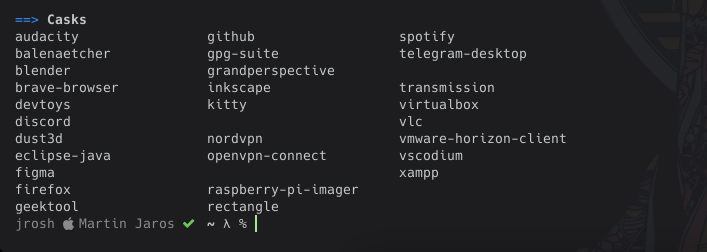
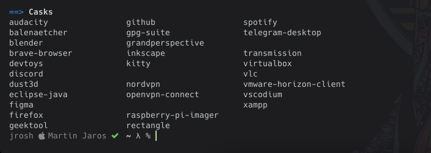

For this task, I use mostly open sourced software so the applications might differ from the choco install command.


To rename user account, you need to enter the controll panel, select users accounts and change the name of the account.
These are the basic permissions that windows offers.
This is the user folder with some restricted permissions.
This is the OS folder with some restricted permissions.
First image is checking what ip address is the machine using. On the second one I am setting a custom IP with Mask, Gateway and DNS.

Release of the current IP address.
Sending a continuous ping to the Google DNS.
Sending 20 pings to the Google DNS.
Tracing the path to hamk.fi using tracert.
Finding out the ip adress of the google.fi website.
Checking for used ports on the current machine.
Checking the ethernet statistics on the current machine.
- Run command prompt as administrator
netsh wlan show profiles- Find the network you want to forget in the list
netsh wlan delete profile name="NetworkName
Learning Portfolio 1: Basic Maintenance Tasks
Minimize the windows to the taskbar, make them full screen or close them.
Drag the title bar to move the windows or resize them from the bottom right corner.
Task was made by Martin Jaros for the Operating systems module
1. Bring your Own Device
2. Rename user account
3. Windows File & Folder Level Permissions
3.1 List Folder Permissions
3.2 User Folder Permissions
3.3 OS Folder Permissions
4. Basic Maintenance Task - Network Settings
4.1 Configure your IPv4 setting.
4.2 Release your current IP
4.3 Send continuous ping
4.4 Send 20 pings
4.5 Trace the path to hamk.fi
4.6 IP address of google.fi
4.7 Display the list of all active ports
4.8 Display Ethernet statistics
5. Specify the steps to forget a wireless network
Welcome screen
© HTML5-Templates.com